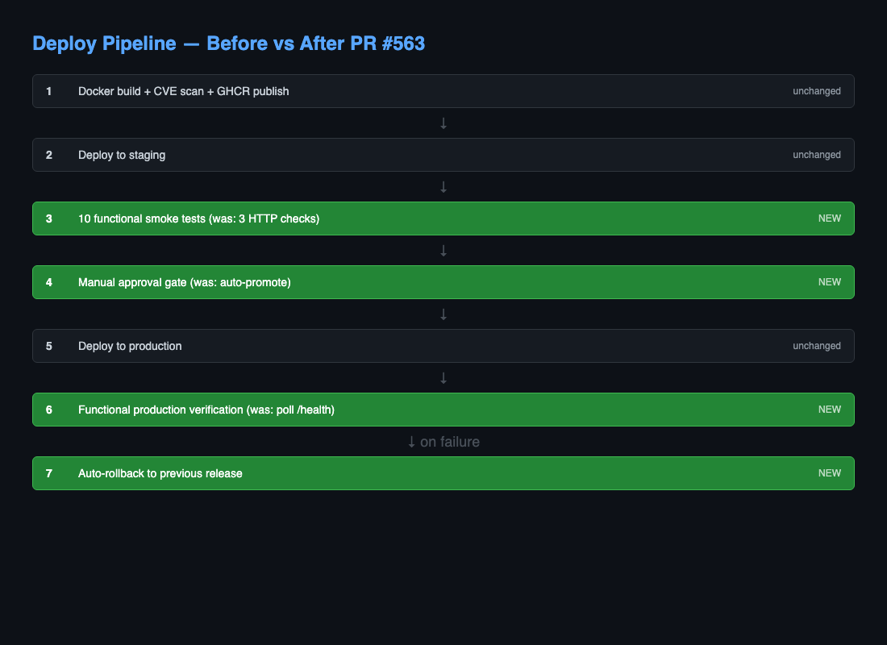
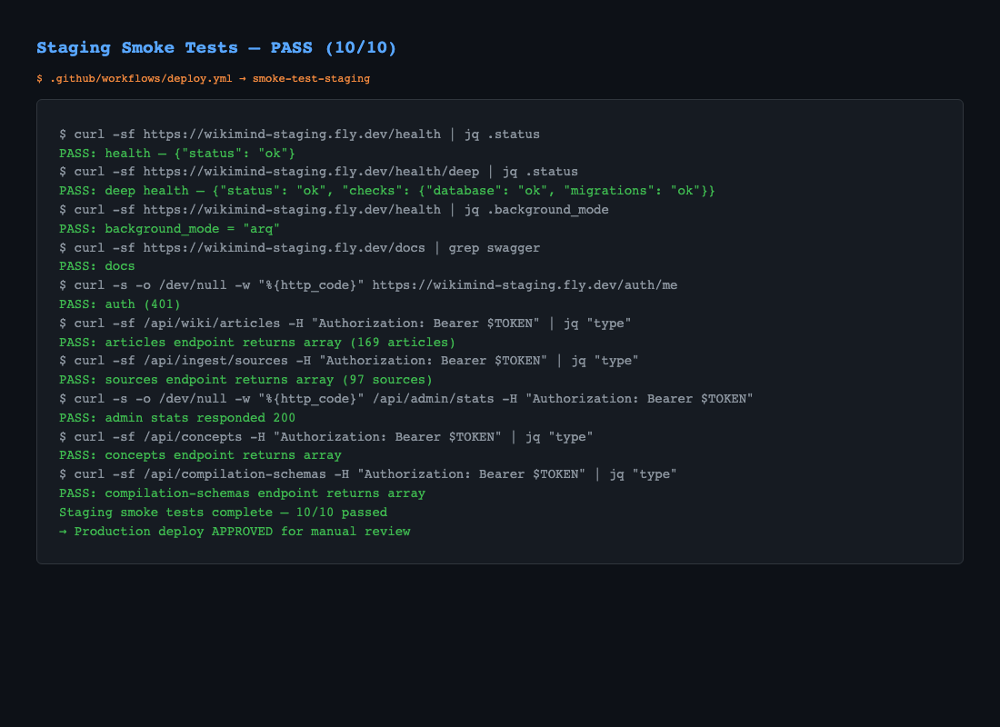
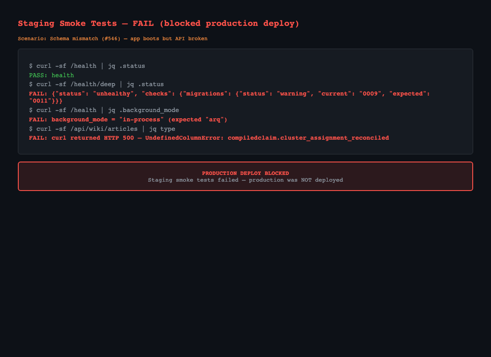

Simulated scenario: schema mismatch (#546) where the app boots but API endpoints return 500 errors.

# BEFORE: only proves the process started curl -sf "$BASE/health" # just HTTP 200 curl -sf "$BASE/docs" # just HTTP 200 curl -sf "$BASE/auth/me" # just HTTP 200 or 401 # Would NOT catch: # - Schema mismatch (#546) # - Missing Redis (#555) # - Broken compilation pipeline # - Missing concept tables # - API endpoints returning errors instead of data
# AFTER: proves the product works 1. curl /health | jq '.status == "ok"' # App responds 2. curl /health/deep | jq '.status != "unhealthy"' # DB + migrations + LLM OK 3. curl /health | jq '.background_mode == "arq"' # Redis working (not in-process) 4. curl /docs | grep swagger # API docs load 5. curl /auth/me → 200 or 401 # Auth middleware works 6. curl /api/wiki/articles | jq 'type == "array"' # Articles endpoint returns DATA 7. curl /api/ingest/sources | jq 'type == "array"' # Sources endpoint returns DATA 8. curl /api/admin/stats → status code # Admin endpoint responds 9. curl /api/concepts | jq 'type == "array"' # New tables accessible (#546) 10. curl /api/compilation-schemas | jq 'type == "array"' # Schema tables work (#521)
deploy-production:
environment: production # requires reviewer approval
needs: [smoke-test-staging]
After staging smoke tests pass, a reviewer must approve before production deploys. This replaces the dangerous auto-promotion that sent broken staging straight to prod.
rollback-production:
needs: verify-production
if: failure()
steps:
- name: Rollback to previous release
run: |
PREV=$(flyctl releases -a wikimind --json | jq -r '.[1].ImageRef')
flyctl deploy -a wikimind --image "$PREV"
If production verification fails after deploy, the pipeline automatically rolls back to the previous working image. No manual intervention needed.
| Failure Type | Old Pipeline | New Pipeline |
|---|---|---|
| Schema mismatch (#546) | MISSED — /health still returned 200 | CAUGHT — /health/deep checks migration version |
| Missing Redis (#555) | MISSED — app silently degraded | CAUGHT — background_mode != "arq" fails check |
| API returns errors | MISSED — never tested API endpoints | CAUGHT — jq validates response is array |
| Missing concept tables | MISSED — never hit /api/concepts | CAUGHT — checks 3 new endpoints |
| Broken staging auto-promotes | AUTO — staging → prod in minutes | GATED — manual approval required |
| Production breaks after deploy | STUCK — manual intervention | AUTO-ROLLBACK — reverts to last image |
https://wikimind.fly.dev/docsblockedThis PR is deployment-pipeline infrastructure rather than a discrete end-user UI feature, so the live docs page was used only as a discovery probe. The automation wrote ui-discovery.json, but Chromium could not launch in this environment and no fresh screenshot was captured.
Playwright Chromium launch failed: bootstrap_check_in ... Permission denied (1100)